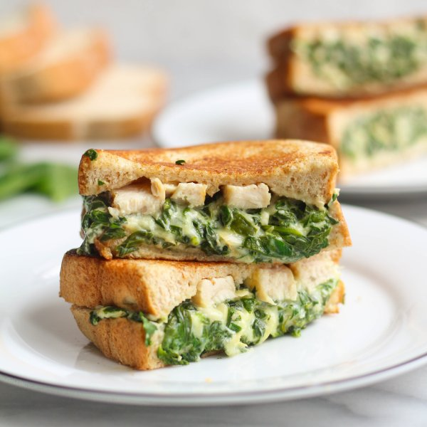

Two-Cheese Chicken, Spinach & Artichoke Melts

Nutrition (per serving)
652.6 kcalCalories
63.8 gProtein
36 gCarbs
27.9 gFat
Full nutrition table
| Calories | 652.6 kcal |
| Total fat | 27.9 g |
| Saturated fat | 14.4 g |
| Trans fat | 0.7 g |
| Cholesterol | 186.1 mg |
| Sodium | 693.9 mg |
| Carbohydrates | 36 g |
| Fiber | 7.2 g |
| Sugars | 4.8 g |
| Protein | 63.8 g |
| Potassium | 1289.8 mg |
| Calcium | 371.4 mg |
| Iron | 5 mg |
| Vitamin A | 359.2 IU |
| Vitamin C | 22.5 mg |
| Vitamin D | 16.9 IU |
Cookware
Ingredients
- 1 (6 oz) jarartichoke hearts, marinated
- 2 (5 oz) pkgsbaby spinach
- 1 ½ lbchicken breasts, boneless skinless
- 2 clovesgarlic
- ½ (8 oz) blockmozzarella cheese
- 2 ozParmesan cheese
- ½ cupplain Greek yogurt
- 8 sliceswhole grain bread
- black pepper
- butter, unsalted
- Italian seasoning
- salt
Steps
- Cut chicken into thin strips.1 ½ lb chicken breasts, boneless skinless
- Preheat a large skillet over medium-high heat. Once skillet is hot, add butter and swirl to coat the bottom.2 tsp butter, unsalted
- Add chicken and spices to the skillet; sauté until golden brown and cooked through, 5-7 minutes. Transfer chicken to a large bowl and cover with foil.2 tsp Italian seasoning
½ tsp salt
¼ tsp black pepper - Meanwhile, peel and mince garlic.2 cloves garlic
- Wash, dry, and finely chop spinach. (Skip washing if it came pre-washed.)2 (5 oz) pkgs baby spinach
- Grate mozzarella and Parmesan.½ (8 oz) block mozzarella cheese
2 oz Parmesan cheese - Drain and finely chop artichokes.1 (6 oz) jar artichoke hearts, marinated
- Return skillet to medium heat. Add more butter and swirl to coat the bottom.1 tbsp butter, unsalted
- Add garlic to the skillet and cook until fragrant, 15-30 seconds.
- Add spinach to the skillet in handfuls, waiting for the spinach to wilt slightly before adding the next handful.
- Add mozzarella, Parmesan, artichokes, yogurt, and salt to the skillet. Stir until combined and cheese has melted. Transfer mixture to the bowl with the chicken and stir to combine. Wipe skillet clean and return to medium heat.½ cup plain Greek yogurt
½ tsp salt - Place bread slices on a flat surface. Top half the slices with the spinach-chicken mixture. Cover sandwiches with remaining bread slices.8 slices whole grain bread
- Once the skillet is hot, add butter and swirl to coat the bottom. Cooking in batches if necessary, place sandwiches in the skillet and cook until bottoms are golden brown, 2-4 minutes.1 tbsp butter, unsalted
- Remove sandwiches to a plate and add more butter to the skillet; return sandwiches to the skillet, browned-side-up, and cook until golden brown on the other side, 2-4 minutes more. Once done, transfer to a cutting board.1 tbsp butter, unsalted
- To serve, cut sandwiches in half and divide between plates. Enjoy!